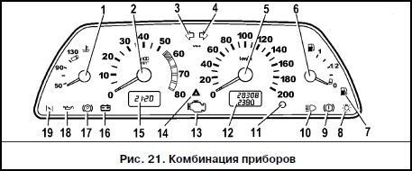

ОПИСАНИЕ АВТОМОБИЛЯ:Органы управления и приборы
Комбинация приборов
Автомобили ВАЗ-2113, -2114, -2115 и их модификации комплектуются комбинациями приборов двух типов, имеющих жидкокристаллические индикаторы (ЖКИ).
При одновременном нажатии рукоятки сброса суточного пробега и включении “зажигания” (подача питания через клемму “15” замка зажигания на комбинацию приборов, двигатель не запущен) приборы комбинации переходят в режим тестирования:
1. Первый тип комбинации приборов.
1.1 Наблюдается трёхкратное отклонение стрелок указателей приборов на весь размах шкалы и полное заполнение сегментов ЖКИ, а также происходит загорание контрольной лампы аварийного запаса уровня топлива.
1.2 Если в момент тестирования нажать и отпустить рукоятку сброса, на ЖКИ счётчика суточного и общего пробега появляется номер варианта программного обеспечения процессора комбинации приборов (например, UEr 1.1 или UEr 0.8 или иное) на время, приблизительно равное 20 секундам (после этого комбинация приборов переходит в рабочий режим автоматически).
1.3 При повторном нажатии и отпускании рукоятки на ЖКИ общего и суточного пробега появляется код последней запомненной неисправности.
1.4 После этого необходимо сделать обнуление путём нажатия на рукоятку сброса с длительностью более 5 секунд.
1.5 По истечении приблизительно 15 секунд после этой операции:
- если остаётся 0, то неисправности отсутствуют;
- если появляется 1, то неисправен микропроцессор;
- если появляется 2, то произошёл обрыв цепи датчика указателя уровня топлива;
- если появляется 4, то в бортсети - повышенное напряжение питания (выше 16 В);
- если появляется 8, то в бортсети - пониженное напряжение питания (ниже 8 В);
- если неисправностей много,то высвечивается цифра, соответствующая сумме кодов неисправностей,
например
6 (2+4),
10 (2+8),
12 (4+8),
14 (2+4+8).
1.6 При наличии на входе тахометра входного сигнала (запущен двигатель) прерывается режим тестирования, и комбинация приборов переходит в рабочий режим.
1.7 При повышенном (выше 16 В) и пониженном (ниже 8 В) напряжении стрелки приборов останавливаются и не работают до момента устранения неисправности.
2. Второй тип комбинации приборов.
2.1. Наблюдается однократное отклонение стрелок указателей приборов на половину размаха и затем однократное отклонение стрелок указателей приборов на весь размах шкалы, на ЖКИ часов/температуры появляется надпись “test”, на ЖКИ счетчика суточного и общего пробега появляется “бегущая строка” из последовательности цифр 10123456789, а также происходит загорание контрольной лампы аварийного запаса уровня топлива.
2.2. При наличии на входе любого из приборов входного сигнала (например, запущен двигатель) после тестирования по п. 2.1 комбинация приборов переходит в рабочий режим.
2.3. При отсутствии на входах всех приборов входных сигналов наблюдается последовательное многократное отклонение стрелок указателей приборов на половину шкалы, а затем - на весь размах шкалы, на ЖКИ часов/температуры появляется надпись “test”, на ЖКИ счетчика суточного и общего пробега появляется “бегущая строка” из последовательности цифр 10123456789, а также происходит загорание контрольной лампы аварийного запаса уровня топлива.
2.4. При повышенном (выше 16 В) и пониженном (ниже 8 В) напряжении стрелки приборов останавливаются и не работают до момента устранения неисправности.
Комбинация приборов показана на рис. 21, где:
1 - указатель температуры охлаждающей жидкости. Переход стрелки в красную зону шкалы указывает на перегрев двигателя. В этом случае проверьте работу термостата и электровентилятора системы охлаждения. Не допускайте работу двигателя в режиме перегрева (порог - 118градусов).
2 - тахометр. Указывает частоту вращения коленчатого вала двигателя. Зона шкалы с красной штриховкой обозначает режим работы двигателя с высокой частотой вращения коленчатого вала, красная зона шкалы - опасные для двигателя режимы. Не допускайте превышение максимально разрешенных оборотов двигателя (порог -6000 об/мин).
3 - контрольная лампа включения указателей поворота по левому борту. Загорается зеленым мигающим светом при включении левого поворота.
4 - контрольная лампа включения указателей поворота по правому борту. Загорается зеленым мигающим светом при включении правого поворота.
5 - спидометр.
6 - указатель уровня топлива.
7 - контрольная лампа резерва топлива. Загорается оранжевым светом, если в топливном баке осталось менее 7 - 9,5 л, из них около 3 л - невырабатываемый остаток. Ни в коем случае нельзя допускать опорожнения топливного бака! В противном случае возможен выход из строя электробензонасоса.
8 - контрольная лампа включения габаритного света. Загорается зеленым светом при включении наружного освещения.
9 - контрольная лампа аварийного состояния рабочей тормозной системы. Загорается красным светом при понижении уровня жидкости в бачке гидропривода тормозов ниже метки “MIN”.
ВНИМАНИЕ!
При загорании контрольной лампы движение запрещено до устранения причин снижения уровня жидкости.
10 - контрольная лампа включения дальнего света фар. Загорается синим светом при включении дальнего света фар.
11 - кнопка сброса показаний.
12 - индикатор пробега. Верхняя строка индикатора индицирует суммарный пробег автомобиля, а нижняя - является суточным счетчиком пройденного пути. Сброс показаний суточного счетчика проводите удержанием кнопки 11 в нажатом положении более 5 с на остановленном автомобиле. Обнуление показаний суточного счетчика происходит также и при снятии клеммы с аккумуляторной батареи.
13 - контрольная лампа “проверьте двигатель”. Подключается в том случае, если автомобиль оборудован системой впрыска топлива. Кратковременное загорание лампы при включении зажигания свидетельствует о самотестировании системы и при отсутствии неисправности она гаснет. В случае обнаружения какого-либо дефекта в системе лампа мигает или горит постоянно.
14 - контрольная лампа включения аварийной сигнализации. Загорается красным мигающим светом при включении аварийной сигнализации.
15 - индикатор времени и температуры. Переключение между индикацией времени и индикацией температуры окружающего воздуха осуществляется кратковременным нажатием на кнопку 11.
При включении зажигания при температуре окружающего воздуха выше +2 гр. всегда появляется индикация часов.
При понижении температуры окружающей среды ниже +2 гр. индикатор в течение 3 с высвечивает показания часов, а затем переходит на индикацию температуры, показание которого первые 10 с происходит в мигающем режиме.
При повышении температуры наружного воздуха выше +3 гр. и повторном ее снижении до +2 гр.: - в случае индикации часов индикатор автоматически переключается на индикацию температуры, показания которого первые 10 с высвечиваются в мигающем режиме; - в случае индикации температуры ее обычный режим прерывается десятисекундным мигающим режимом.
Установка часов и минут производится в режиме индикации времени путем вращения кнопки 11 в сторону знаков “h” - часы и “m” - минуты.После снятия клеммы с аккумуляторной батареи и последующего восстановления напряжения отсчет времени производится от нулевого значения.
16 - контрольная лампа заряда аккумуляторной батареи. Загорается красным светом при включении зажигания и гаснет после пуска двигателя. Яркое загорание лампы или ее свечение в полнакала при работающем двигателе указывает на слабое натяжение (обрыв) ремня привода генератора или на неисправность в цепи заряда, а возможно самого генератора.
17 - контрольная лампа включения стояночного тормоза. Загорается красным светом при включении стояночного тор- моза.
18 - контрольная лампа недостаточного давления масла. Загорается красным светом, если давление в системе смазки двигателя недостаточное.
19 - резерв - для впрыскового автомобиля. Контрольная лампа воздушной заслонки карбюратора - для БСЗ.